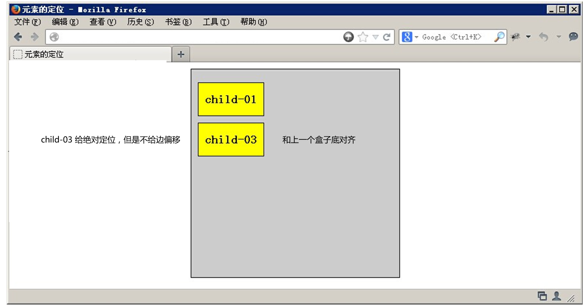
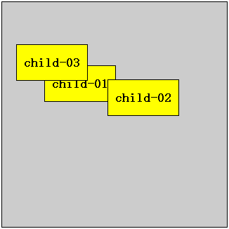

1.清除浮动
人生就像乘坐北京地铁一号线：
途经国贸，羡慕繁华；
途经天安门，幻想权力；
途经金融街，梦想发财；
经过公主坟，遥想华丽家族；
经过玉泉路，依然雄心勃勃…
这时，有个声音飘然入耳:乘客你好,八宝山马上就要到了！
顿时醒悟：人生苦短，有始有终。
好比我们的浮动，有浮动开始，则就应该有浮动结束。
1.1 为什么要清除浮动
我们前面说过，浮动本质是用来做一些文字混排效果的，但是被我们拿来做布局用，则会有很多的问题出现， 但是，你不能说浮动不好 。
由于浮动元素不再占用原文档流的位置，所以它会对后面的元素排版产生影响，为了解决这些问题，此时就需要在该元素中清除浮动。
如果浮动一开始就是一个美丽的错误，那么请用正确的方法挽救它。
1.2 清除浮动本质
清除浮动主要为了解决父级元素因为子级浮动引起内部高度为0 的问题。


2.清除浮动的方法
其实本质叫做闭合浮动更好一些, 记住，清除浮动就是把浮动的盒子圈到里面，让父盒子闭合出口和入口不让他们出来影响其他元素。
在CSS中，clear属性用于清除浮动，其基本语法格式如下：
选择器{clear:属性值;}
| 属性值 | 描述 |
|---|---|
| left | 不允许左侧有浮动元素（清除左侧浮动的影响） |
| right | 不允许右侧有浮动元素（清除右侧浮动的影响） |
| both | 同时清除左右两侧浮动的影响 |
2.1 额外标签法
是W3C推荐的做法是通过在浮动元素末尾添加一个空的标签例如 <div style=”clear:both”></div>，或则其他标签br等亦可。
优点： 通俗易懂，书写方便
缺点： 添加许多无意义的标签，结构化较差。 我只能说，w3c你推荐的方法我不接受，你不值得拥有。。。
2.2 父级添加overflow属性方法
可以通过触发BFC的方式，可以实现清除浮动效果。（BFC后面讲解）
可以给父级添加： overflow为 hidden|auto|scroll 都可以实现。
优点： 代码简洁
缺点： 内容增多时候容易造成不会自动换行导致内容被隐藏掉，无法显示需要溢出的元素。
2.3 使用after伪元素清除浮动
使用方法：
.clearfix:after { content: "."; display: block; height: 0; clear: both; visibility: hidden; }
.clearfix {*zoom: 1;} ie6、7 专有
优点： 符合闭合浮动思想 结构语义化正确
缺点： 由于IE6-7不支持:after，使用 zoom:1触发 hasLayout。
代表网站： 百度、淘宝网、网易等

注意： content:"." 里面尽量跟一个小点，或者其他，尽量不要为空，否则再firefox 7.0前的版本会有生成空格。
2.4 after伪元素空余字符法
content:"\200B";这个参数，Unicode字符里有一个“零宽度空格”，即 U+200B，代替原来的“.”，可以缩减代码量。而且不再使用visibility:hidden。
.clearfix:after {content:"\200B"; display:block; height:0; clear:both; }
.clearfix { *zoom:1; }.
当然有些网站也用 content:"\0200" 的，都是空格的意思。
代表网站： 阿里巴巴等
2.5 使用before和after双伪元素清除浮动
使用方法：
.clearfix:before,.clearfix:after{
content:".";
display:table;
}
.clearfix:after{
clear:both;
}
.clearfix{*zoom:1;}
优点： 代码更简洁
缺点： 由于IE6-7不支持:after，使用 zoom:1触发 hasLayout。
代表网站： 小米、腾讯等
3.定位初识（position）
如果，说浮动， 关键在一个 “浮” 字上面， 那么 我们的定位，关键在于一个 “位” 上。
PS: 定位是我们css算是数一数二难点的了，但是，你务必要学好它，我们css离不开定位，特别是后面的js特效，天天和定位打交道。不要抵触它，反而要爱上它，它可以让我们工作更加轻松哦！
3.1 为什么要用定位？
那么定位，最长运用的场景再那里呢？ 来看几幅图片，你一定会有感悟！
第一幅图， 小黄色块可以再图片上移动：

第二幅图， 左右箭头压住图片：

第三幅图, hot 再盒子外面多出一块，更加突出：

以上三个小地方，如果用标准流或者浮动，实现会比较复杂或者难以实现，此时我们用定位来做，just soso！
3.2 元素的定位属性
元素的定位属性主要包括定位模式和边偏移两部分。
1、边偏移
在CSS中，通过边偏移属性top、bottom、left或right，来精确定义定位元素的位置，其取值为不同单位的数值或百分比。具体解释如下表所示：
| 边偏移属性 | 描述 |
|---|---|
| top | 顶端偏移量，定义元素相对于其父元素上边线的距离 |
| bottom | 底部偏移量，定义元素相对于其父元素下边线的距离 |
| left | 左侧偏移量，定义元素相对于其父元素左边线的距离 |
| right | 右侧偏移量，定义元素相对于其父元素右边线的距离 |
也就说，以后定位要和这边偏移搭配使用了， 比如 top: 100px; left: 30px; 等等
2、定位模式
在CSS中，position属性用于定义元素的定位模式，其基本语法格式如下：
选择器{position:属性值;}
position属性的常用值
| 值 | 描述 |
|---|---|
| static | 自动定位（默认定位方式） |
| relative | 相对定位，相对于其原文档流的位置进行定位 |
| absolute | 绝对定位，相对于其上一个已经定位的父元素进行定位 |
| fixed | 固定定位，相对于浏览器窗口进行定位 |
4.静态定位static (普遍型)
静态定位是所有元素的默认定位方式，当position属性的取值为static时，可以将元素定位于静态位置。 所谓静态位置就是各个元素在HTML文档流中默认的位置。
上面的话翻译成白话： 就是网页中所有元素都默认的是静态定位哦！ 其实就是标准流的特性。
在静态定位状态下，无法通过边偏移属性（top、bottom、left或right）来改变元素的位置。
PS： 静态定位其实没啥可说的。
5.相对定位relative（自恋型）
刚刚看到一个超级超级帅的帅哥，看得我都忍不住想和他搞基了。世间怎会有如此之完美的男人。我和他就这样一动不动的对视着，就仿佛一见钟情。时间也在这一瞬间停止了。直到我的手麻了。才恋恋不舍的放下镜子。。。。
相对定位是将元素相对于它在标准流中的位置进行定位，当position属性的取值为relative时，可以将元素定位于相对位置。
对元素设置相对定位后，可以通过边偏移属性改变元素的位置，但是它在文档流中的位置仍然保留，而且移动的位置是相对于自身原来的位置来说的。如下图所示，即是一个相对定位的效果展示：

注意： 相对定位最重要的一点是，它可以通过边偏移移动位置，但是原来的所占的位置，继续占有,移动的距离，是按照原来的自身的位置来移动
就是说，相对定位的盒子仍在标准流中，它后面的盒子仍以标准流方式对待它。
6.绝对定位absolute (拼爹型)
吃早饭时，老婆往儿子碗里放了两个煎蛋，儿子全给了我，还一本正经地说：“爸爸，多吃点，男人养家不容易。”
我一阵感动，刚想夸他两句。
儿子接着说：“以后全靠你让我拼爹了！”
[注意] 如果文档可滚动，绝对定位元素会随着它滚动，因为元素最终会相对于正常流的某一部分定位。
当position属性的取值为absolute时，可以将元素的定位模式设置为绝对定位。
注意： 绝对定位最重要的一点是，它可以通过边偏移移动位置，但是它完全脱标，完全不占位置。
6.1 父级没有定位以最初包含快（浏览器）为准
若所有父元素都没有定位，以浏览器为准对齐(document文档)。

6.2 父级有定位以父级为准
绝对定位是将元素依据最近的已经定位（绝对、固定或相对定位）的父元素（祖先）进行定位。

6.3 绝对定位的盒子没有边偏移
如果只是给盒子指定了 定位，但是没有给与边偏移，则改盒子以标准流来显示排序，和上一个盒子的底边对齐，但是不占有位置。

6.4 子绝父相
这个“子绝父相”太重要了，是我们学习定位的口诀，时时刻刻记住的。
这句话的意思是 子级是绝对定位的话， 父级要用相对定位。
首先， 我们说下， 绝对定位是将元素依据最近的已经定位（绝对、固定或相对定位）的父元素（祖先）进行定位。
就是说， 子级是绝对定位，父亲只要是定位即可（不管父亲是绝对定位还是相对定位，甚至是固定定位都可以），就是说， 子绝父绝，子绝父相都是正确的。
但是，在我们网页布局的时候， 最常说的 子绝父相是怎么来的呢？ 请看如下图：

草图就是如下：

所以，我们可以得出如下结论：
因为子级是绝对定位，不会占有位置， 可以放到父盒子里面的任何一个地方。
父盒子布局时，需要占有位置，因此父亲只能是 相对定位.
这就是子绝父相的由来。
7.固定定位fixed（认死理型）
固定定位是绝对定位的一种特殊形式，它以浏览器窗口作为参照物来定义网页元素。当position属性的取值为fixed时，即可将元素的定位模式设置为固定定位。
当对元素设置固定定位后，它将脱离标准文档流的控制，始终依据浏览器窗口来定义自己的显示位置。不管浏览器滚动条如何滚动也不管浏览器窗口的大小如何变化，该元素都会始终显示在浏览器窗口的固定位置。
固定定位有两点：
- 固定定位的元素跟父亲没有任何关系，只认浏览器。
- 固定定位完全脱标，不占有位置，不随着滚动条滚动。
记忆法： 就类似于孙猴子， 无父无母，好不容易找到一个可靠的师傅（浏览器），就听的师傅的，别的都不听。

ie6等低版本浏览器不支持固定定位。
8.四种定位总结
| 定位模式 | 是否脱标占有位置 | 是否可以使用边偏移 | 移动位置基准 |
|---|---|---|---|
| 静态static | 不脱标，正常模式 | 不可以 | 正常模式 |
| 相对定位relative | 不脱标，占有位置 | 可以 | 相对自身位置移动 |
| 绝对定位absolute | 完全脱标，不占有位置 | 可以 | 相对于定位父级移动位置 |
| 固定定位fixed | 完全脱标，不占有位置 | 可以 | 相对于浏览器移动位置 |
9.叠放次序（z-index）
当对多个元素同时设置定位时，定位元素之间有可能会发生重叠。

在CSS中，要想调整重叠定位元素的堆叠顺序，可以对定位元素应用z-index层叠等级属性，其取值可为正整数、负整数和0。
比如： z-index: 2;
注意：
z-index的默认属性值是0，取值越大，定位元素在层叠元素中越居上。
如果取值相同，则根据书写顺序，后来居上。
后面数字一定不能加单位。
只有相对定位，绝对定位，固定定位有此属性，其余标准流，浮动，静态定位都无此属性，亦不可指定此属性。
10.定位模式转换
跟 浮动一样， 元素添加了 绝对定位和固定定位之后， 元素模式也会发生转换， 都转换为 行内块模式， 因此 比如 行内元素 如果添加了 绝对定位或者 固定定位后，可以不用转换模式，直接给高度和宽度就可以了。
11.元素的显示与隐藏
在CSS中有三个显示和隐藏的单词比较常见，我们要区分开，他们分别是 display visibility 和 overflow。
他们的主要目的是让一个元素在页面中消失，但是不在文档源码中删除。 最常见的是网站广告，当我们点击类似关闭不见了，但是我们重新刷新页面，它们又会出现和你玩躲猫猫！！
11.1 display 显示
display 设置或检索对象是否及如何显示。
display : none 隐藏对象 与它相反的是 display:block 除了转换为块级元素之外，同时还有显示元素的意思。
特点： 隐藏之后，不再保留位置。
11.2 visibility 可见性
设置或检索是否显示对象。
visible : 对象可视
hidden : 对象隐藏
特点： 隐藏之后，继续保留原有位置。（停职留薪）
11.3 overflow 溢出
检索或设置当对象的内容超过其指定高度及宽度时如何管理内容。
visible : 不剪切内容也不添加滚动条。
auto : 超出自动显示滚动条，不超出不显示滚动条
hidden : 不显示超过对象尺寸的内容，超出的部分隐藏掉
scroll : 不管超出内容否，总是显示滚动条